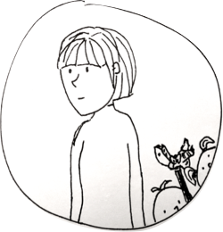
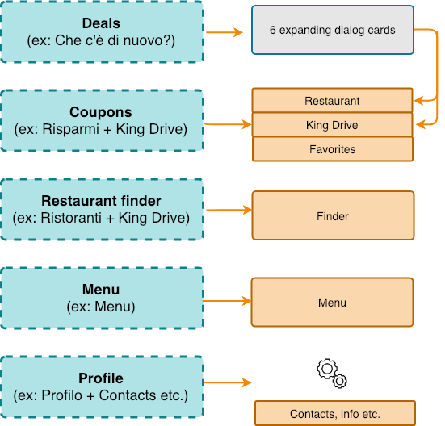

Burger King redesign
The goal of this project was to identify certain pain points users of the Burger King app may have, and propose a solution to these in the form of a redesigned app. The final deliverable of the project was a clickable prototype (try it here!). Along with the usability improvements, I had also created a fresh UI design for the app.
My role & tasks
User research
UX & UI redesign
Prototyping
User research
The first step in the design process was understanding the users of the Burger King app. What are their goals, needs and wants? To answer these questions, I had analyzed the app’s reviews on the Play Store and App Store, as well as carried out four user interviews. The findings of the user research had been summarized through the creation of two personas, Luca and Maria, and their respective user journeys.
Persona #1: Luca
Luca is a student living in Palermo. One Friday evening, he is out drinking with his friends, and they would like to grab some take-away on the way home. Luca downloads the Burger King app to see their menu and the nearest restaurant with a drive-through facility. (See Luca's journey before the redesign here.)
Goals:
- See an overview of the items sold at Burger King
- Find the nearest Burger King that has a drive-through
Pain points (issues encountered):
- Unclear navigation (hard to find menu)
- Confusing distinction between “normal” and drive-through restaurant finder
Persona #2: Maria
Maria has two children, 3 and 5 years old. They regularly eat at Burger King, given its convenience and the fact that the children really like it, especially the toys they receive with their menus. Before a visit to a Burger King, Maria likes to use the app to check for relevant discounts and to save promo coupons. (See Maria's journey before the redesign here.)
Goals:
- See new promotions (especially children’s menus)
- Access, save and use discount coupons
Pain points (issues encountered):
- Navigation between promotions is hard to understand
- Coupon redemption flow is confusing
UX & UI Redesign
Information Architecture and Navigation
Most of the issues highlighted during the user research were linked to the app’s navigational structure. To address these, I had mapped out the existing information architecture setup, then redesigned it to better suit the identified user needs. My goal with the redesign was to reduce excise (unnecessary steps) by regrouping and simplifying navigation options. As a result, the new IA allows users to more easily create a mental model of the app.
Map of the original information architecture
Redesigned information architecture
UI redesign
For reasons of consistency and branding, I had kept Burger King’s original brand colors in the visual redesign. To ensure these vivid hues don’t make the app feel cluttered, I opted for neutral background and text colors. For the app’s typography, I chose the “Asap” font family, as it features a wide variety of thickness and kerning options, and has a friendly yet modern look-and-feel.
Prototyping
I created a clickable prototype for the project using InVision Studio. Try it here, or take a look at the recordings of our two personas' redesigned user journeys below.
As I did not want to alter the app’s content or features considerably, I have kept the original home/landing page as a sort of news/highlights area. However, I did alter the display and the interaction of these promotions: I turned them into cards, so that it would be more obvious that they are interactive entities (something that was unclear in the original design).
I also chose for the promotional information to appear as a dialog instead of a whole new screen to minimize excise; this resulted in the elimination of 8 separate (excise) screens from the app. The dialog cards have clearly labeled buttons with a feedforward informing users exactly what will happen when they click it (e.g. “To Coupons”).
Conclusion & Reflection
What I've learned from this project:
- A deep-dive into the topic of information architecture and navigational patterns helped me realize that clean and intuitive systems aren't as easy to create as I had initially thought. Navigation systems in particular require constant planning and testing iterations to get right
- Microinteractions matter! Dan Saffer's book with the same title proved an invaluable read on understanding and applying these. His model of breaking down triggers, rules, feedback and loops/modes makes it much easier to consciously design these smallest, but integral parts of digital products.
- Prototypes make it much easier to spot flaws in the design than just static wireframes! Prototype early and quickly, it doesn't have to look pixel-perfect. Getting into the habit of iterative prototyping, getting user feedback and making adjustments ensures superior final results (and fewer unpleasant surprises at the final launch date).
For more in-depth info about the research and design process, click here to read the paper I wrote about this project.